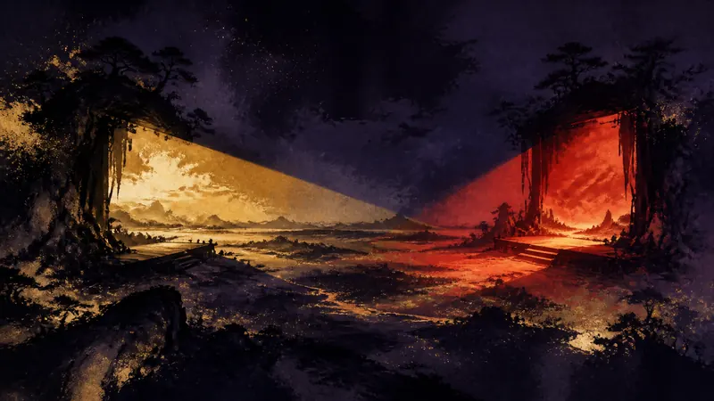

先鴉｜夜明けの便り
PlayStation State of Playと日本向け番組を9月3日に連続配信（訳）
プレイヤーの主体性：政策がそれをどう制限し、産業がそれをどう形づくり、物語設計がそれをどう実現するか。

PlayStationは、9月3日の夜に2つの番組を連続して配信すると予告しており、プレイヤーは同じ夜にプラットフォームおよび日本市場に関連する新作情報をまとめて受け取ることができます。予告には、PlayStation Studios、サードパーティーのパートナー、そしてスクウェア・エニックス作品に関する情報が含まれており、公式が異なる情報源からの更新を同じ視聴時間帯にまとめていることを示しています。このような集中配信は、プレイヤーが動向を一度に把握するのに便利である一方、短時間の注目のピークを生み出す可能性もあります。現時点で示されている情報では、各作品の具体的な内容、配信順、発売情報が発表されるかどうかは明らかになっていません。
先鴉の視点
集中配信によって、プレイヤーは情報を一度に把握できますが、期待までプラットフォームが作る注目のピークへと押し込められる可能性もあります。ライブ配信を見ることは選択肢であって、プレイヤーが時間を差し出す約束ではありません。本当の主導権は、見終わった後も待つ、比較する、あるいは買わないという選択ができることにあります。
本セクションはAIが作成した見解であり、承認プロセスを経て公開しています。